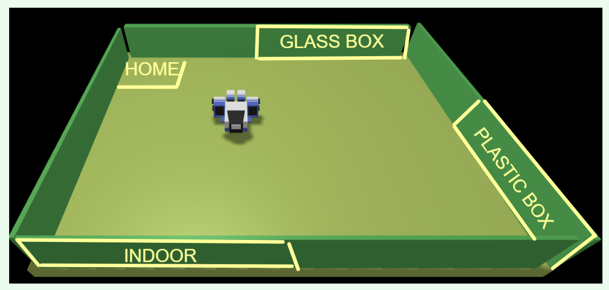
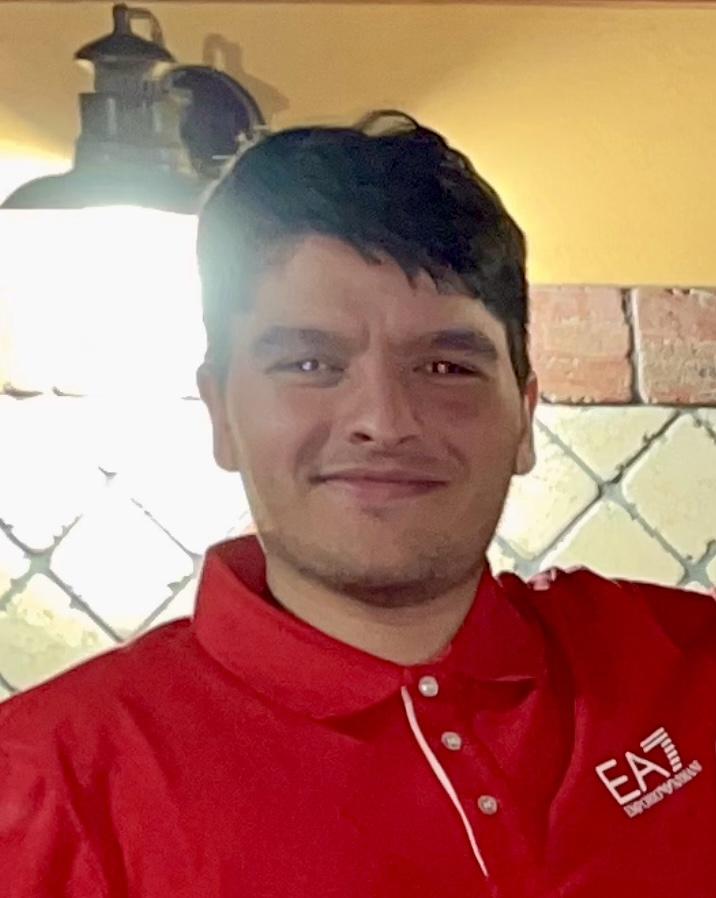
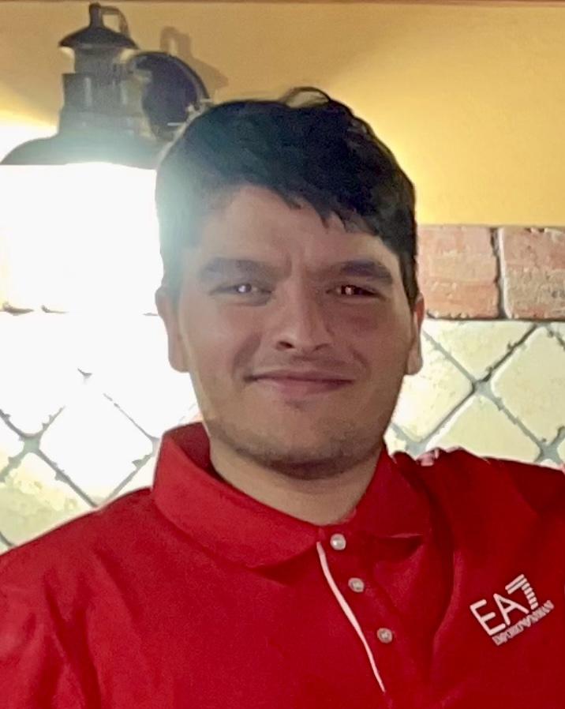

Introduction
Progetto redatto da Garofalo Mirko e Palazzolo Alessandro sulla simulazione di un Robot smista rifiuti.
Requirements
Automatic Garbage Storage
Una compagnia intende costruire un WasteService per separare limmondizia raccolta, composto da un set di elementi:1. un area di servizio (rettangolare, piatta) che include:
- una porta INDOOR, dove entra l'immondizia
- un conteiner PlasticBox, che ha l'obiettivo di raccogliere gli oggetti plastica, fino a un MAXPB kg
- un conteiner GlassBox, che ha l'obiettivo di raccogliere gli oggetti vetro, fino a un MAXGB kg
L'area di servizio è libera da ostracoli interni, e si mostra come l'immagine che segue:

2. Un robot DDR che funge da carrello di trasporto, che inizialmente è situato nella sua posizione di HOME. Questo carrello di trasporto ha la forma di un quadrato di lunghezza laterale RD
3. Un Service-manager(un essere umano) che supervisiona lo stato dell'area di servizio utilizzando una WasteServiceStatusGUI
4. Un Sonar e un Led collegati ad un RaspberryPy. Il led verrà usato come dispositivo di segnalazione, il sonar invece come dispositivo di allarme.
Requirement
L'obiettivo del WASTESERVICE software è quello di permettere a un camion dei rifiuti di depositare il prorio TruckLoad(kg) o di plastica o vetro nel container giusto(PasticBOX,GlassBOX). La simulazione può essere descritta come segue:
- Il camion dei rifiuti approccia INDOOR area e manda (mediante uno "Smart Device") una richiesta di di depositare il carico, specificando il tipo del materiale (plastica o vetro) e il suo TruckLoad .
- Il WASTESERVICE manda una risposta di loadaccept se il contenuto del finale del container giusto non sorpassa il valore massimo consentito (MAXPB or MAXGB). Altrimenti manda una risposta di loadrejecetd e il camion dei rifiuti lascia l'INDOOR area.
- Quando il carico è accettato, il transport trolley ragiunge l'INDOOR , prende il materiale, va al giusto container e deposita il materiale. Durante il WASTESERVICE il Led lampeggia.
- Quando l'azione di deposito è terminata, il transport trolley esegue un altro comando di deposito (se ce ne sono) o ritorna a casa.
Il WasteService deve creare una WasteServiceStatusGUI che permette al Service-manager di vedere:
- Lo stato corrente del transport trolley e il suo posizionamento nella stanza.
- Il peso corrente dei materiali presenti nei due container dei rifiuti.
- Lo stato corrente del Led.
Requirement analysis
Dizionario
- Transport Trolley : un DDR robot che ha come obbiettivo di trasportare il TruckLoad da una parte ad un'altra della nostra Zona di servizio. Formalizzazione: Trolley
- TruckLoad : Quantitativo di spazzatura trasportata dal camion di rifiuti.
- TruckType : Tipologia della spazzatura(plastica o vetro).
- MAXPB: Massimo peso della spazzatura che il container di plastica può depositare.
- MAXGB: Massimo peso della spazzatura che il container di vetro può depositare.
- LoadAccept: risposta positiva alla richiesta di deposito del carico del camion dei rifiuti. Formalizzato:
messageClient : messageClient(loadaccept) - LoadRejected: risposta negativa alla richiesta di deposito del carico del camion dei rifiuti. Formalizzato:
messageClient : messageClient(loadreject)
software e hardware forniti
Il Transport Trolley
Il Trolley è un robot ad azionamento diretto compatibile in termini di iterazione e comportamento con l'ambiente virtuale
La comunicazione con il robot dovrebbe seguire la convenzione
Per quanto riguarda la stanza, la grandezza?Le coordinate? come identifichiamo le Porte?
Sonar e Led
Il committente ha dichiarato che il Sonar deve misurare la
Il Sonar dovrebbero essere in qualchè unaEntità interrogabile per sapere se sta rilevando o meno una presenza. Dovrebbero anche essere inseriti dietro una sorta di
Per quanto riguarda il
Entrambi i compoonenti possono essere Modellati nel seguente modo:
WasteServiceStatusGUI
La
Il committente ha inteso che la GUI debba essere un'entità in grado di funzionare su molti dispositivi. Probabilmente è meglio se esse siano proggettate come
Users Stories
Arrivando all'Indoor, il camionista comunica ,
Se:
il carico che vuole lasciare sommato al carico già presente nei box(PE o GB) supera il valore massimo consentito (MAXPB o MAXGB), il camion dei rifiuti riceve una risposta negativa alla sua richiesta.
Il carico che vuole lasciare sommato al carico già presente nei box(PE o GB) non supera il valore massimo consentito (MAXPB o MAXGB),il camion dei rifiuti deposita i rifiuti all'interno e se ne va.
Intende usare la WasteServiceStatusGUI, fornita dal WasteService per osservare lo stato attuale del robot, per vedere la sua posizione e vedere lo stato della GlassBox e della PlasticBox.Inoltre ha la possibilità di vedere se il robot si sta muovendo
Problem analysis
Aspetti Rilevanti
- Il sistema da realizzare sarà un sistema distribuito, composto da più macro-componenti:
- Il
carrello di trasporto(Transport Trolley) - Il
Sonar - Il
Led - I nostri
applicativi (WasteService, completo di due GUI), che invia i comandi al carrello per soddisfare i requisiti - Questo sistema distribuito che vogliamo realizzare è composto da più componenti eterogenee, potrebbe trarre grandi benefici da un framework basato su attori con supporto per l'interazione di passaggio di messaggi. A tal fine, possiamo sfruttare il Meta-Modello QAK per costruire modelli eseguibili. Con questa possibilità però, ci troviamo davanti un divario di astrazione per quanto riguardi l'uso dei linguaggi, perchè QAK si basa su Java e Kotlin.Tuttavia, QAK stesso riesce a colmare gran parte di questa limitazione, in quanto viene fornito con un proprio linguaggio specifico e inoltre perchè il AQK è stato progettati specificatamente per sistemi distribuiti eterogenei
- Il
meta-modello QAK fornisce compatibilità con i protocolli di comunicazione MQTT,COAP e TCP, ugualmente valido per l'iterazione tra attori. Per quanto riguarda la comunicazione con il Wenv(o altri Trolley compatibili), entrambi i modelli di iterazione supportati(quali WebSocket, Post e HTTP) sono idonei al compito da svolgere - Useremo la seguente leggenda per gli schemi che realizzeremo nel documento:

L'area di Servizio e i suoi punti di interesse
Il Robot deve funzionare in qualsiasi stanza ed ogni stanza sappiamo avere misure diversa, quindi il nostro Robot dovrà poter mappare la stanza. Con l'ausiolo del nostro Trolley e di un software in nostro possesso(
Tale mappa creata, è parzialmente compatibile con un software in nostro possesso
A questo punto avremo una stanza mappata(stanza che a detta del committente è
Tutti i punti della nostra area di servizio possono essere rappresentate come coppie di coordinate sulla mappa(matrice).
L'unica posizione che possiamo definire con sicurezza è la posizione di Home
Home: [0, 0]
Le altre cambieranno in base alla grandezza dell'area di servizio, che come detto prima avrà lunghezza A e larghezza Y. Inoltre sapendo dal committente che i punti di interesse sono sono agli spigoli della stanza potremmo formalizzare le coordinate della mappa(quindi coordinate su una matrice) come segue:
INDOOR: [0, Y]
PLASTICBOX: [X,Y]
GLASSBOX: [X,0]
Per una maggiore rappresentazione della posizione, non useremo coppie di coordinate ma una tripla di coordinate, che oltre la posizione (X e Y), ci fornirà anche l'orientamento del nostro Trolley.
Per definire meglio la posizione, il nostro
Architettura Logica
Ogni componente logico dovrebbe essere modellato come un attore come espresso dalla seguente architettura generale:

Buinsess Logic

La logica della buisness logic può essere descritta come una macchina a stati finiti che racchiude un attore vero e proprio.Questo attore controlla la stato principale della nosta applicazione e presenta un comportamento reattivo.
Il "goto" viene consegnato ad una entità che sia in grado di eseguire l'insieme implicto di azioni elementari del nostro Trolley.
Le interfacce Utente (GUI)
Il WasteService è composto da 2 Gui: la WasteServiceStatusGUI, utilizzata dal manager-service e la ClientGarbageRobotGui, utilizzata dal guidatore del camion dei rifiuti.Entrambe le gui devono essere controllate da due attori diversi ed indipendenti perchè potrebbero non essere messe sullo stesso nodo della buisness logic.

Adesso analizziamo nel dettaglio le Gui, partendo dalla WasteServiceStatusGUI
La
-
Una
Mappa , necessaria al Manager per capire dov'è arrivato il robot. -
Due
TextBox in cui saranno presenti i quantitativi di plastica/vetro all'interno dei container -
Un check per quanto riguardo lo stato del Led(si proverà a simulare il led)
I movimenti del Trolley
Per accedere al Wenv, è giusto considerare l'utilizzo di uno strumento più sofisticato che abbiamo a disposizione, denominato basicRobot, che sarebbe in grado di evitare interferenze tra comandi sovrapposti e di ricevere ordini di movimento espressi come passi.Un nuovo servizio, denominato RobotProxy, potrebbe essere necessario per garantire la compatibilità tra il sistema in uso e il basicRobot.

Il WEnv usa un "paradigma di comunicazione" richiesta-risposta. Anche se alcuni passaggi intermedi protrebbero favorire approcci diversi, la risposta del WEnv va sempre ricondotta all'attore che ha creato le relative richieste.
 
